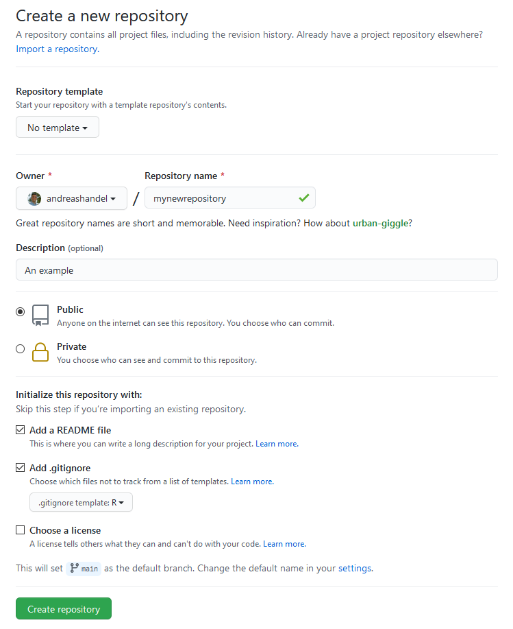
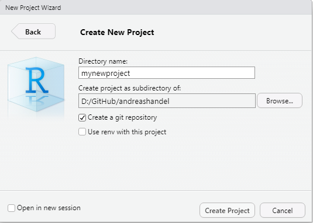

This document gives a brief discussion of working with R projects through GitHub. There is more than one way to do this, they should be equivalent in most instances.
I assume you read through the Git/GitHub introduction and have created a GitHub account.
I also assume that you are using the GitKraken client. If you don’t, you need to adjust things accordingly.
For this approach, you start by creating your repository on GitHub. The most common place to create a repository is under your own user name/account. Note that it is also possible to create repositories inside an organization (if you are part of an organization). As an example, my Github user name is andreashandel and the name of my research group/organization is ahgroup. Depending on if I want a repository under my name or under the research group/organization, I’ll go to https://github.com/andreashandel or https://github.com/ahgroup/).
Once you are in the location/account where you want the new repository, click on Repositories to see your list of repositories (which might initially be empty). Now create a new repository by clicking the green New button. A page should show up where you can specify details for your new repository, something like this:

Specify the repository owner. Make sure it’s the one you want, e.g., yourself or an organization you are part of. Pick a good name for your repository. Set the repository as private or public. In general, you should consider doing it public, unless there is an important reason to have it private (e.g. confidential data). Note that if you set it to private, you might not be able to access it with the free version of GitKraken. Check the box Initialize this repository with a README. Set the .gitignore option to R. You can keep the license box unchecked, or choose a license for your page. Click “create repository”.
Open Gitkraken, under File choose Clone Repo go to Github.com, find the name of the repository you just created and clone it to some place on your local computer (i.e. copy it from Github to your local computer.) E.g. if your repository was called mynewrepo, and you place it on your desktop under windows, you might choose C:\Users\yourname\Desktop as the target. I recommend having a main folder for a specific organization or course or project, and into which you place all your repositories related to it (e.g. place all your repositories for this course into a folder called MADA, such as C:\Data\GitHub\MADA\.)
Remember to not place your repository in a location that is synced by other software such as DropBox or Onedrive. Also do not place GitHub repositories inside other GitHub repositories.
Open RStudio on your computer. Choose File, New Project, Existing Directory and find the directory/folder you just created on Github and copied to your local computer (e.g. C:\Users\yourname\Desktop\mynewrepo). If things work, you should see in the bottom right window of RStudio (at least) 2 files, one with .Rproj ending and a README.md.
Click to open the README.md file. It will only contain the name of your repository with a # sign in front. At some point, it is useful to add meaningful information. For now, just to practice, you can add whatever you want.
In the future, if you want to edit your project, click or double-click on the .Rproj file. You can try it. Close RStudio, click the .Rproj file and the same setup as before should show up. Using R projects has several advantages. One is that it makes how you write file paths easier, so while having an .Rproj file is not strictly required I recommend you do it that way.
Now create your content, place any files you create inside your project directory or its sub-folders.
Once you are done editing your content (for now), go to Gitkraken (or your preferred Git client) and push your changes to Github.
If you use GitKraken, in the top right you should see a notification about changed files. Click view changes, then Stage all Changes. Write a commit message, the Commit the changes. In the main area of GitKraken, you should see that the repository – usually main or master, unless you work on a branch – shows the computer icon above the one with some random logo (or your picture). That means your local repository is ahead of the one on GitHub.com. To get them in sync, you click the Push button. If things work, the two symbols should now be in the same line.
If your code cannot sync you will likely receive an option from GitKraken to perform a force push. A force push will overwrite the remote repo with the local repo forcibly. This means that the remote will be updated with any changes that exist on your local computer however, if any additional changes have been made to the code since you began editing (i.e. someone else has made a commit to the repo while you were working on it) they will be overwritten by the force push since they are not on your local repo. Thus, use with care.
Now that everything is established, the workflow is simple, you just need to remember to go through all the steps.
Above we created the repository on GitHub first, then cloned it to the local machine, then initialized it as an RStudio project. It is also possible to do this in reverse. If you want to start a Git repo this way, you need to install Git standalone, and it must be configured to work with third-party applications. You can read chapter 6 of happygitwithr for more detailed instructions.
Open RStudio. Choose File, New Project, New Directory and (usually) you’ll choose New Project. Pick a project name and location. Check the Create a git repository box. This button might not appear if you only installed Gitkraken and not Git.

Create your content in the project folder.
Once you finished working on your project for now, open GitKraken. Go to File -> Init Repo and choose the folder where your project is in. You’ll likely get a message about an initial commit that needs to be created. Agree to it. Your repository should show up in GitKraken. In the top right, look at and stage your changes, write a commit message, then commit. Next, press the Push button.
At this point, if you didn’t properly connect GitKraken and GitHub previously, you’ll likely get an error message. Follow the error message and the connect Gitkraken to your Github account information to get it to work.
You’ll see a message about no remote existing and if you want to add one. Say yes. A menu on the left should show up. Make sure the repository name is the same as your local repository/folder name. Then click the green button. If things worked, your local repository has been created on GitHub.com.
Once your repository exists both locally and on Github.com, the syncing process is exactly as described under Approach 1.
Sooner or later, you will encounter a merge conflict. That happens if the same file(s) changed both locally and on GitHub.com. That can happen if multiple people work on the same files, or if you work on multiple computers and forget to always push/pull before and after you work on a project. GitKraken can help you resolve conflicts. Sometimes you have to do it manually. Moving the offending files out of your local repository, then doing the merge and after that adding the updates again can help. If you know that one source is the definite one, you can force a push or pull. A more advanced approach is to use branches.
More information on merge conflicts and how to deal with them using GitKraken can be found here and here.